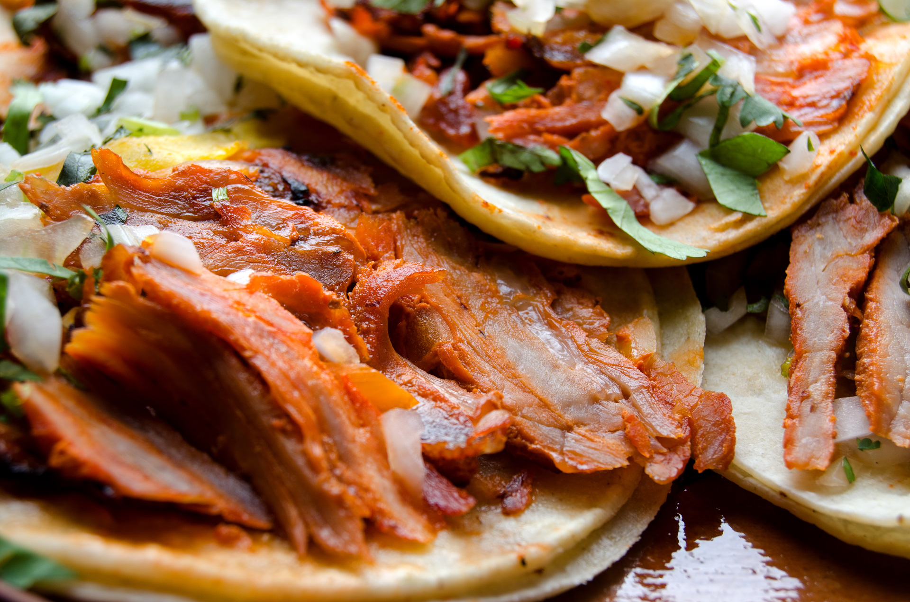

HOME
Tacos al pastor

The best mexican street food
A classic Mexican street food, tacos al pastor feature thinly sliced pork marinated in a blend of dried chiles, spices, and pineapple.
Served on warm corn tortillas and topped with diced onions, cilantro, and a squeeze of lime,
they offer a delicious balance of bold and fresh tastes.
Ingredients
- 3 dried guajillo chilies, seeds discarded
- 2 dried pasilla chiles, seeds discarded
- 1 cup boiling water, or as needed to cover
- 2 pork tenderloins, membranes (silver skin) removed
- ¾ cup pineapple juice
- 1 tablespoon white vinegar
- 4 cloves garlic
- 1 teaspoon ground cinnamon
- 1 pinch cayenne pepper, or to taste (Optional)
- 1 pinch ground cumin, or to taste
- 1 pinch dried oregano, or to taste
- 1 tablespoon vegetable oil, or as needed
- ½ teaspoon salt, or to taste
- corn tortillas
- 1 onion diced and cilantro
- 1/2 pineapple sliced
Steps
- Place dried guajillo and pasilla chiles into a bowl and pour in boiling water to cover. Let chiles stand 30 minutes to soften.
- Cut pork tenderloins in half crosswise and in half again lengthwise again to make 8 long strips.
- Drain water from chiles and pour in pineapple juice and vinegar. Add garlic cloves, chipotle pepper, cinnamon, cayenne pepper, cumin, and oregano. Transfer chile mixture to a blender and blend to make a smooth marinade.
- Place pork into a resealable plastic bag and pour marinade over pork; knead bag several times to coat pork. Squeeze out excess air and seal the bag. Refrigerate overnight.
- Preheat outdoor grill (preferably charcoal) for high heat and lightly oil the grate.
- Remove pork from bag and drain and discard marinade; transfer pork to a platter. Drizzle meat with 1 tablespoon vegetable oil and season with salt. Use tongs to gently stir pork pieces to coat lightly with oil.
- Cook pork strips on preheated grill until meat shows good grill marks and is lightly pink in the center, 7 to 8 minutes per side. An instant-read meat thermometer inserted into the center of the largest piece should read at least 145 degrees F (65 degrees C). Transfer pork to a fresh platter.
- Drizzle a nonstick skillet with 1 teaspoon vegetable oil and place over medium heat. Lay a tortilla into the hot oil and place 1 slice of Monterey Jack cheese into center of the tortilla. Cook until tortilla is hot, lightly browned on the bottom, and cheese has melted, 1 to 2 minutes. Repeat with remaining tortillas and cheese slices. Transfer each tortilla to a plate.
- Slice pork strips across the grain into pieces about 1/4 inch thick. Divide shredded cabbage onto each tortilla and top each with about 6 slices of pork, 1 tablespoon roasted tomato salsa,a pinch of onion diced and cilantro and 1 slice of pineapple. Fold taco over fillings to eat.
HOME